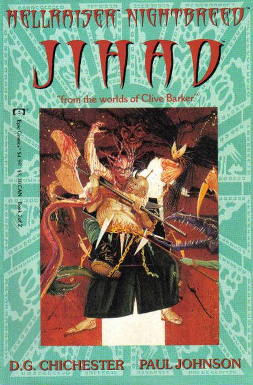
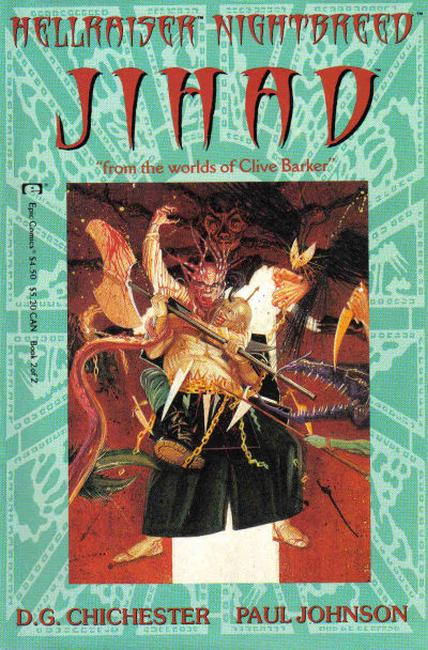

 Living Hell meets the Dead of Night. It's been foretold in the icy malevolence of the stars. A diabolic high priest offering down a prayer for war -- a war waged in the name of the cold altar of the infernal.
An undead messiah and his monstrous flock steeling themselves against a battle for what's left of their souls. Two dark faiths, baring fang and fury in an unholy crusade only one side will survive... From the midnight imagination of best-selling author Clive Barker come the merciless Cenobites and savage Nightbreed, clashing for the first time anywhere in a wicked war of warm blood, twisted betrayal and unnatural redemption...